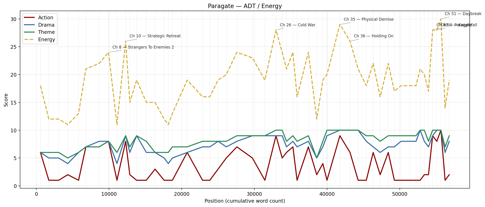
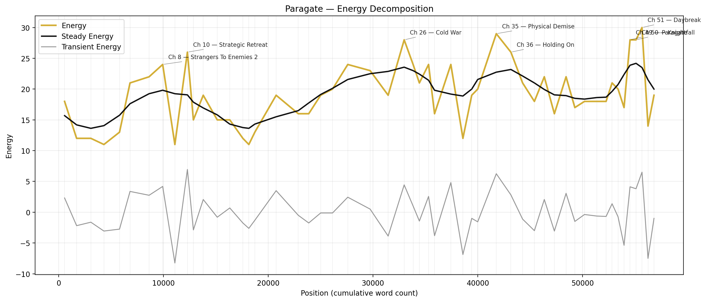
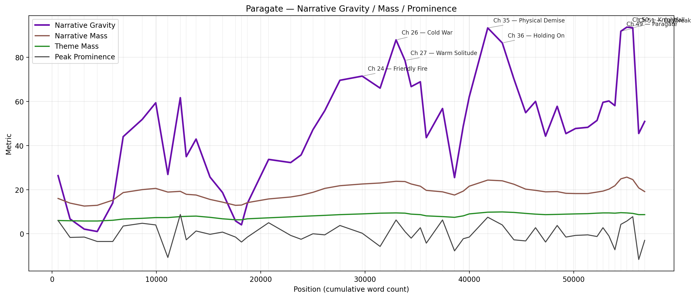
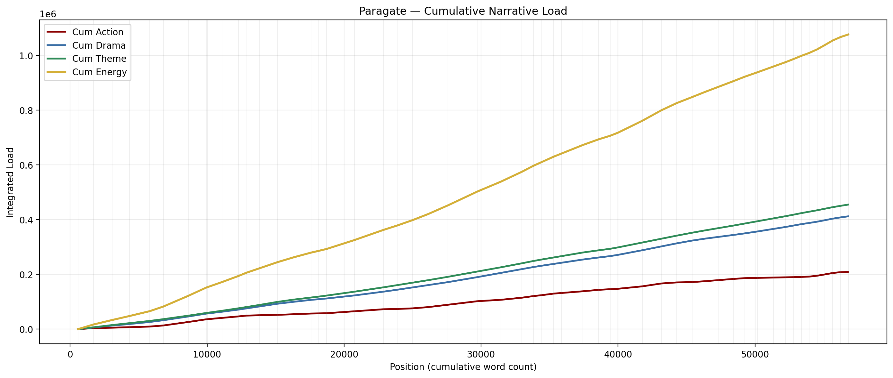
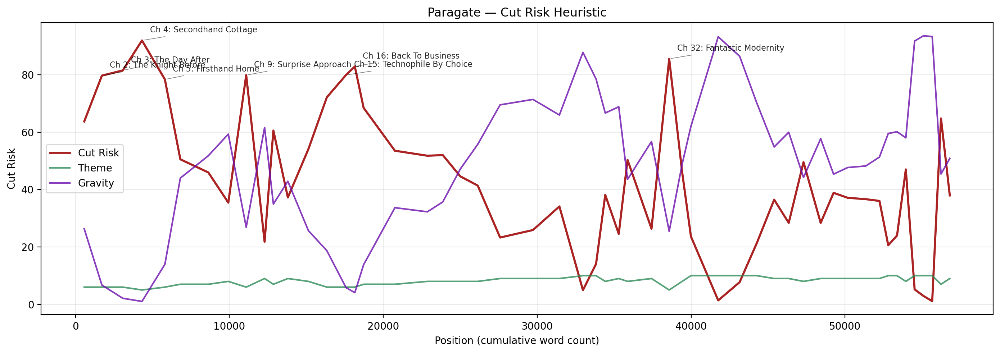

Paragate — Narrative Kinematics Report
Generated from manuscript ADT data using the StoryNK model.
- 01. System Overview
- 02. Top Gravity Peaks
- 03. Top Energy Peaks
- 04. Highest Cut-Risk Elements
- 05. LLM Revision Analysis
- 06. Full Chapter Table
Peak Gravity: Ch 50 — Knightfall
Highest Cut Risk: Ch 4 — Secondhand Cottage
System Overview
Action, Drama, and Theme define the primary narrative state. Energy is their sum. Steady-state and transient tracks approximate long-wave baseline versus local fluctuation. Narrative Mass, Peak Prominence, and Narrative Gravity estimate which regions are merely loud versus which ones are actually load-bearing.





Top Gravity Peaks
Top Energy Peaks
Highest Cut-Risk Units
 LLM Revision Diagnosis
LLM Revision Diagnosis
Keep the major spine and climactic sequence intact — that's where the book sings — but surgically tighten the opening and selected midbook episodes. Eliminate or compress repetitive domestic and ‘tourism’ dream sequences; collapse mirrored scenes unless they show new information or conflicting perspective; protect chapters 49–51 and 35 at all costs. A tight pass focused on merging exposition, pruning fantasy-dream detours, and sharpening the mirrored beats will transform the current slow middle into forward-driving setup for the excellent climax.
Protect at All Costs
- Chapter 49
- Chapter 50
- Chapter 51
- Chapter 35
- Chapter 26
- Chapter 36
Strongest Regions
Drag Corridors
Cut Candidates
Chapter-by-Chapter Notes
Next Revision Pass
- 1) Tighten Act One: collapse or merge low-energy domestic setup scenes (chapters 2–6) so the door/other-world hook and its consequences sit within the first 3–4 chapters.
- 2) Prune or compress dream/tourism material (especially chapter 32 and the long trauma baseline in chapter 4). Convert long dream sequences to single, potent images that echo later rather than interrupting pacing.
- 3) Reduce mirror-drag: audit each Cody/Katiya mirrored pair and keep only the version that adds unique information or true contrast. If both must exist, make them contrapuntal (conflicting perceptions or different consequences) instead of redundant.
- 4) Protect and polish the climax cluster (49–51): tighten causality between Paragate → Knightfall → Daybreak and remove any reflective scenes that duplicate emotional beats already resolved in the action.
- 5) Trim low-theme/high-drama melodrama (overwritten interiority) — convert internal monologues that restate stakes into visible choices and actions.
- 6) Merge small expository chapters into neighboring scenes and ensure every chapter advances either plot (new obstacle) or theme (decision/change), not just atmosphere.
- 7) Re-check POV switching: avoid neutral or indistinct POV frames that dilute emotional immediacy; make each swap earn its space by delivering new stakes, crucial information, or tonal contrast.
- 8) Do a final pass to confirm chapter transitions are driven by conflict, not merely scene change; every chapter should raise a question the next chapter answers or escalates.
Full Chapter / Unit Table
| Ch | Chapter | A | D | T | E | G | Cut | POV | Summary |
|---|---|---|---|---|---|---|---|---|---|
| 1 | Strangers To Enemies 1 | 6.0 | 6.0 | 6.0 | 18.0 | 26.3 | 63.8 | Cody celebrates his first home, drunkenly stumbles through the adjoining door into another world, is healed by strangers, and fixates on the "cosplayer" girl on the other side. | |
| 2 | The Knight Before | 1.0 | 5.0 | 6.0 | 12.0 | 6.7 | 79.7 | Katiya's intro: she struggles to relax, Aldrin frames trainee expectations, and she reconnects with Jullian as they "christen" her new place. | |
| 3 | The Day After | 1.0 | 5.0 | 6.0 | 12.0 | 2.1 | 81.6 | Cody's bleak office day: roasted for late redlines, awkward beat with Kei, then family unpacking with Miguel queued up for drinks. | |
| 4 | Secondhand Cottage | 2.0 | 4.0 | 5.0 | 11.0 | 1.0 | 92.0 | Katiya's trauma baseline: nightmares of Hillfar; she self-stabilizes, starts her day, meets Derry & Carmen (Rayna foreshadow), and heads to base with Bertram. | |
| 5 | Firsthand Home | 1.0 | 6.0 | 6.0 | 13.0 | 14.0 | 78.4 | Cody + Miguel bro out, drink hard; Miguel crashes, Cody stays up. | |
| 6 | Insurgency | 7.0 | 7.0 | 7.0 | 21.0 | 44.0 | 50.6 | Katiya's first day ends in panic when a distant light (Firebrand tie-in) appears; town responds; on returning home she finds an intruder—Cody—and ambushes him. | |
| 7 | Exfiltration | 7.0 | 8.0 | 7.0 | 22.0 | 51.8 | 46.0 | Prologue re-seen through Katiya: she crosses into the modern world and recoils, landing back through the door—mirror of Cody's intro. | |
| 8 | Strangers To Enemies 2 | 8.0 | 8.0 | 8.0 | 24.0 | 59.3 | 35.5 | Third clash: Katiya (assuming Auvryan assassin) and Cody fight to another misunderstanding; she drives him back through the door. | |
| 9 | Surprise Approach | 1.0 | 4.0 | 6.0 | 11.0 | 26.9 | 79.9 | Cody tries to rationalize it away (no wound); barricades the door; nearly late to work; meets foil Reed. | |
| 10 | Strategic Retreat | 8.0 | 9.0 | 9.0 | 26.0 | 61.6 | 21.8 | Katiya cleans to stave off panic, studies Cody's device; time skip: a month later she hesitates during a royal escort, barely averts disaster, is berated, and runs to find Bertram. | |
| 11 | Ennui and Excoriation | 2.0 | 6.0 | 7.0 | 15.0 | 35.0 | 60.6 | Another month later: Cody is bored while Reed earns praise; Nav spins up a new project; Cody ghosts social invites, but hears pleading through the door at home. | |
| 12 | Anxiety and Avoidance | 1.0 | 9.0 | 9.0 | 19.0 | 42.9 | 37.3 | FOUR WEEK TIME SKIPKatiya, Ryder, and Paxton rescue near-dead Bertram; she's blamed and shut out—her only remaining lifeline is Cody. | |
| 13 | The Sleeping Knight | 1.0 | 6.0 | 8.0 | 15.0 | 25.7 | 54.2 | Katiya crosses mid-panic; Cody calms her and lets her sleep; awkward breakfast; they agree to "no interfering" (both intend to break it). | |
| 14 | Luddite By Chance | 3.0 | 6.0 | 6.0 | 15.0 | 18.7 | 72.2 | Cody gives her a gentle orientation day: first car ride (terrifying), Costco errand gauntlet—Katiya is overwhelmed by the future. | |
| 15 | Technophile By Choice | 1.0 | 5.0 | 6.0 | 12.0 | 5.8 | 80.0 | Cody runs Katiya's route in Gaffesend; she tours him as "royal inventor"; awkward Jullian moment; tavern hang where Cody fits in. | |
| 16 | Back To Business | 1.0 | 4.0 | 6.0 | 11.0 | 4.1 | 82.9 | Cody's spark flickers: nostalgia and lunch with Alan (Jackson talk); he returns hoping for an open door. | |
| 17 | Onward To Chaos | 1.0 | 5.0 | 7.0 | 13.0 | 13.8 | 68.5 | Katiya visits Bertram in the hospital (promises Hillfar); market duty goes sideways; she chases and collars Rayna (Ahkvasan half-blood); Jullian downplays her leap; Cody leaves a treat. | |
| 18 | Civillian Combat | 6.0 | 6.0 | 7.0 | 19.0 | 33.7 | 53.6 | Cody's volunteer training day: Katiya teases, his mistake catches Aldrin's eye; later he chooses friendship over victory in a challenge—character beat. | |
| 19 | Warrior Business | 1.0 | 7.0 | 8.0 | 16.0 | 32.3 | 51.8 | Open house at Cody's work: meet Reed & Kei; Cody geeks out, Katiya meets Alan & Kim; they overhear Reed/Kei on Cody missing from the "Future Talent" wall. | |
| 20 | Domestic Relations | 1.0 | 7.0 | 8.0 | 16.0 | 35.7 | 52.0 | Katiya engineers a Cody—Kei date; in parallel she and Jullian go to hot springs and bristle; Cody's date feels off and foggy—he insists he's "fine." | |
| 21 | Foreign Affairs | 3.0 | 8.0 | 8.0 | 19.0 | 47.2 | 44.6 | Katiya extracts an uncomfortable truth from Jullian; intercut meltdown date beats (both couples misfire); Cody & Kei hook up but it lands as empty. | |
| 22 | Losing To Fear | 5.0 | 7.0 | 8.0 | 20.0 | 55.8 | 41.4 | Katiya passes core exams but shoots poorly; Aryn is unflappable; Cody and Reed clash about what a Level-1 is; Katiya insists on leading the next team exam, feeling off her game. | |
| 23 | Failing To Launch | 7.0 | 8.0 | 9.0 | 24.0 | 69.6 | 23.3 | Cody presents and gets hammered; Reed's allies redirect the room; Katiya's plan withers, Bertram is "killed" in exercise, she barges the opposing house—bad optics. | |
| 24 | Friendly Fire | 5.0 | 9.0 | 9.0 | 23.0 | 71.4 | 25.9 | Reed's presentation wins; Cody's mild critique is spun as jealousy and he snaps publicly; Katiya loses to Aryn, is told she's below the line, and learns her family's already in Gaffesend. | |
| 25 | A House Divided | 1.0 | 9.0 | 9.0 | 19.0 | 66.0 | 34.1 | Cody spirals home; Katiya waits on his couch; their mutual failures ignite a bitter fight—door slammed shut again. | |
| 26 | Cold War | 9.0 | 9.0 | 10.0 | 28.0 | 87.9 | 4.9 | Jackson's "Operation Bluewings" flashback: drone crash, mission abort, and his sacrificial call to Overwatch in the storm. | |
| 27 | Warm Solitude | 5.0 | 9.0 | 10.0 | 24.0 | 78.6 | 14.1 | Katiya's origin trauma: childhood game ? treehouse collapse ? Raph's death; she hides in a corpse pit; the Chymaeran lie brands her forever. | |
| 28 | Prometheus | 6.0 | 7.0 | 8.0 | 21.0 | 66.7 | 38.2 | Months later: Naveen notes Cody's improvement but deeper ennui; company lunch where Reed is promoted; Reed asks Cody to help fix his flawed prototype (they bond); that night Cody, riding the high, uses Essence as flux—batteries "fire" and spark his next idea. | |
| 29 | Once Lovers | 7.0 | 8.0 | 9.0 | 24.0 | 68.9 | 24.6 | ||
| 30 | Cold Sweat | 1.0 | 7.0 | 8.0 | 16.0 | 43.6 | 50.4 | ||
| 31 | Heating Up | 7.0 | 8.0 | 9.0 | 24.0 | 56.8 | 26.4 | ||
| 32 | Fantastic Modernity | 2.0 | 5.0 | 5.0 | 12.0 | 25.5 | 85.6 | ||
| 33 | Modern Fantasy | 4.0 | 7.0 | 8.0 | 19.0 | 48.9 | 46.1 | ||
| 34 | Professional Death | 1.0 | 9.0 | 10.0 | 20.0 | 62.1 | 23.7 | ||
| 35 | Physical Demise | 9.0 | 10.0 | 10.0 | 29.0 | 93.3 | 1.4 | ||
| 36 | Holding On | 6.0 | 10.0 | 10.0 | 26.0 | 86.5 | 7.7 | ||
| 37 | Letting Go | 1.0 | 10.0 | 10.0 | 21.0 | 70.1 | 21.4 | ||
| 38 | Bottoming Out | 1.0 | 8.0 | 9.0 | 18.0 | 54.9 | 36.5 | After reaching the ugliest versions of themselves, Cody and Katiya finally stop performing strength and let each other see the damage. Cody interrupts his own collapse long enough to comfort Katiya after Bertram's death, and Katiya's tribunal summons turns grief into a hard deadline. By the end of the chapter, despair has not lifted—but it has been given direction. | |
| 39 | Crossing Over | 6.0 | 7.0 | 9.0 | 22.0 | 60.0 | 28.4 | The private crisis inside Katiya's house becomes part of a much larger war when Titus and Sylvia force their way into the story. Cody is thrown into a terrifying first encounter with people from a harsher world, Katiya begins to understand the scale of what is coming, and Cody's attempt to regroup turns into a brutal training date that recommits him to fighting for a future instead of grieving one he already lost. | |
| 40 | Reaching Up | 2.0 | 6.0 | 8.0 | 16.0 | 44.2 | 49.6 | The planning phase begins in earnest as Cody's world and Katiya's world stop operating like separate emotional shelters. Over coffee, cheap drinks, and overlapping stories, the group starts building a shared strategy. Cody's abandoned project stops being a joke, and Katiya's increasingly unstable home life collides with the possibility that her estranged allies might actually stand with her. | |
| 41 | Annealment | 6.0 | 7.0 | 9.0 | 22.0 | 57.8 | 28.4 | Action replaces vague intention. Cody begins rebuilding JAX with help instead of shame, while Katiya tries to hold together a house full of secrets, fugitives, and divided loyalties. Both storylines harden under pressure: Cody through labor, Katiya through deception and risk. | |
| 42 | Eutectic Point | 1.0 | 7.0 | 9.0 | 17.0 | 45.4 | 38.9 | The story widens. Katiya is introduced to Aliaki, Jade, and the deeper political reality behind the coming attack, while Cody is invited deeper into Reed's privileged world and closer to a genuine second chance at proving himself. Both protagonists are handed tools and warnings they only partly understand. | |
| 43 | Harsh Noise | 1.0 | 8.0 | 9.0 | 18.0 | 47.7 | 37.1 | Hope starts making noise. Cody begins fabrication in Reed's family machine space and gains the first meaningful encouragement he has felt from adults tied to the aerospace legacy he still wants. Meanwhile, Katiya's alliance nearly implodes in a misunderstanding fueled by power and distrust, forcing her to stabilize a group that could either save Gaffesend or tear itself apart. | |
| 44 | In Loving Memory | 1.0 | 8.0 | 9.0 | 18.0 | 48.2 | 36.7 | Grief finally becomes communal instead of private. Cody helps Aryn and Rayna speak through loss by talking about Jackson, Katiya returns to a quieter house and finds evidence of the care he has extended to others, and the chapter ends with intimacy growing out of exhaustion, trust, and shared mourning. | |
| 45 | In Future Grief | 1.0 | 8.0 | 9.0 | 18.0 | 51.4 | 36.1 | Both protagonists face family systems that love them but do not really understand what they are choosing. Cody confronts his parents' fear, finances, and assumptions about his future, while Katiya tells her family the truth about the danger she still intends to face. Jackson's name and memory become fused to Cody's project, turning invention into memorial. | |
| 46 | Close Quarters | 1.0 | 10.0 | 10.0 | 21.0 | 59.6 | 20.6 | The quiet before the storm turns out not to be quiet at all. Cody and Katiya field-test the prototype and accidentally unleash terrifying power, then return home to find official pressure closing around Katiya's life. Their last stretch of peace becomes a vow, a confession, and an act of choosing each other before the worlds move to tear them apart. | |
| 47 | Ground Control | 2.0 | 8.0 | 10.0 | 20.0 | 60.2 | 24.0 | Cody and Katiya each step into what should be their final chance to claim the futures they want, only to be immediately restrained by the institutions they have spent the story trying to survive. Cody tries to reach the Aspen conference room before HR can bury him, while Katiya is taken into custody before her tribunal and shut away from the threat she knows is coming. By the end of the chapter, both are trapped inside systems that mistake control for safety. | |
| 48 | Metanoia | 2.0 | 7.0 | 8.0 | 17.0 | 58.1 | 47.0 | Both protagonists fight for one clean chance to be heard. Cody's confession turns his firing into a political problem inside Navidson-Monroe, while Katiya persuades Aryn that the truth matters more than procedure and turns imprisonment into a joint push toward Aldrin. The chapter tests what they have actually learned: not how to escape pressure, but how to move through it without lying to themselves. | |
| 49 | Paragate | 9.0 | 9.0 | 10.0 | 28.0 | 91.8 | 5.2 | The true conflict of Paragate begins as witness replaces doubt and preparation replaces denial. Aldrin sees enough to gamble on Katiya, while Cody leaves Navidson-Monroe uncertain of what his honesty has bought him but sure he is not done yet. Both protagonists step fully into the roles they have been resisting, and the story pivots from argument into mobilization. | |
| 50 | Knightfall | 8.0 | 10.0 | 10.0 | 28.0 | 93.6 | 2.9 | The battle turns when Cody is the first to notice movement across the frozen lake and realizes the defense is pointed the wrong way. As the first line is held by powers and allies beyond the core cast, the real threat reveals itself as a coordinated strike against the city itself. Katiya is forced into the exact shape of the nightmare that made her who she is, and Cody refuses to leave her to face it entirely alone. | |
| 51 | Daybreak | 10.0 | 10.0 | 10.0 | 30.0 | 93.4 | 1.1 | Katiya confronts the living shape of her oldest trauma and proves that what she has learned is stronger than fear. As Nhytyx recreates the emotional architecture of the nightmare that once broke her, Katiya saves her family through action instead of paralysis, while Cody disobeys her only enough to make one small but crucial difference. At dawn, Katiya completes her arc not just by surviving the past, but by replacing it with a new public truth. | |
| 52 | Parasmagate | 1.0 | 6.0 | 7.0 | 14.0 | 45.5 | 64.8 | The epilogue gives Paragate its emotional closure before leaving one quiet fracture open for the future. Cody and Katiya emerge from the battle changed, no longer using each other's worlds as refuge from their own lives, and their relationship finally rests on chosen commitment instead of mutual escape. | |
| 53 | Threaded Echoes | 2.0 | 8.0 | 9.0 | 19.0 | 50.9 | 38.0 |